发明王昶和梁伟铿的人真是个天才。
奥运会作为世界上最大的运动盛事，每个运动员都将此视为最高殿堂。
虽然偶尔也会有放松时刻，但也仅仅会在赛后的私人时间，或者拿到奖项后与国人共同庆祝。
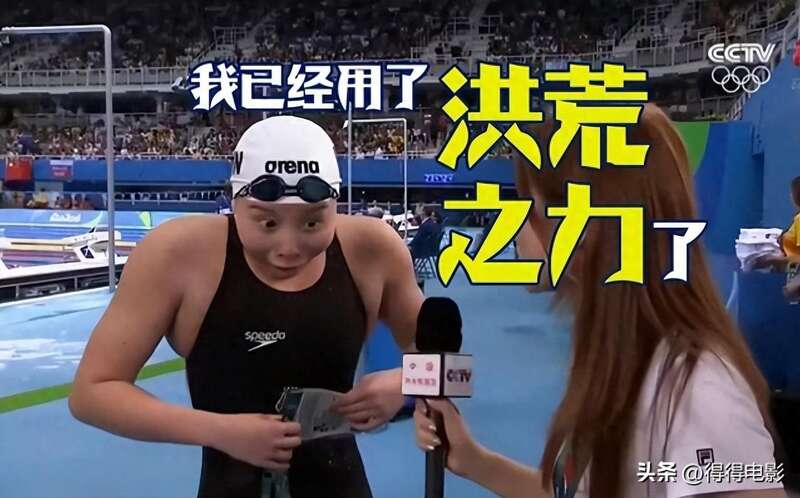
可谁能想象，本届巴黎奥运会上就出现了俩活宝。
他们不仅在赛后采访时间跳舞耍宝，比赛过程中更是“名梗”不断——
中途丢拍，戏耍教练，还有辣椒求雨等名场面。
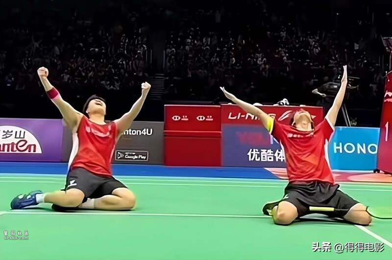
然而不得不服的是，他们玩的越开心，打得分数却越高，一招“歪嘴笑偷后场”把外国人气成倒仰。
如今已经进入决赛，金牌之战马上拉响。
他们就是来自中国的00后男子双人羽毛球选手——
王昶和梁伟铿。
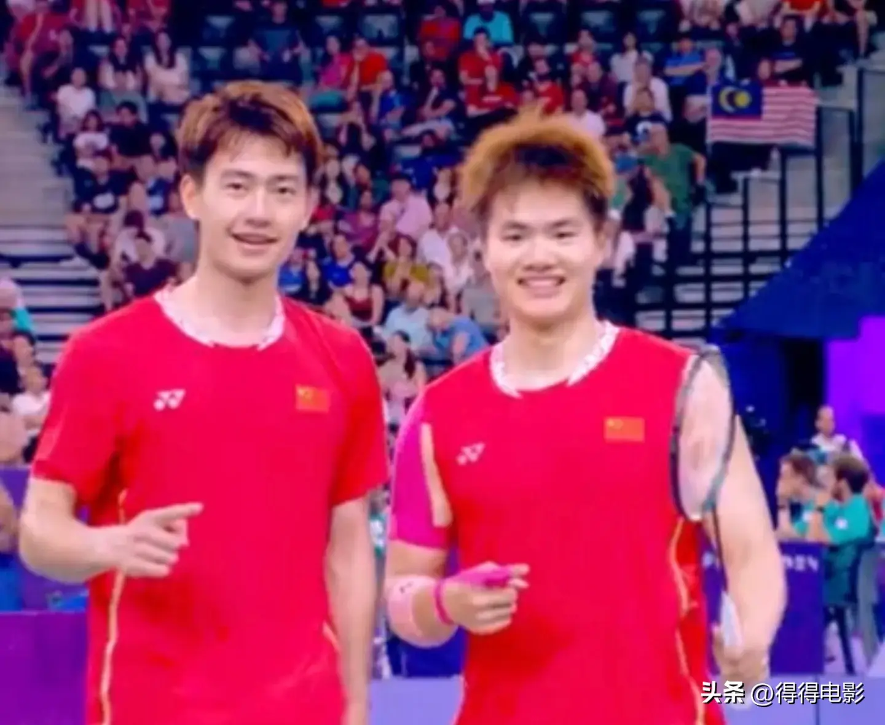
网友亲切地称他们为“梁王”组合。
真的，我非常建议大家除了乒乓球和游泳之外，一定要关注一下这俩人。
有阿姨看完这俩人比赛后强烈怀疑他们是不是有多动症。
实在太好笑了。
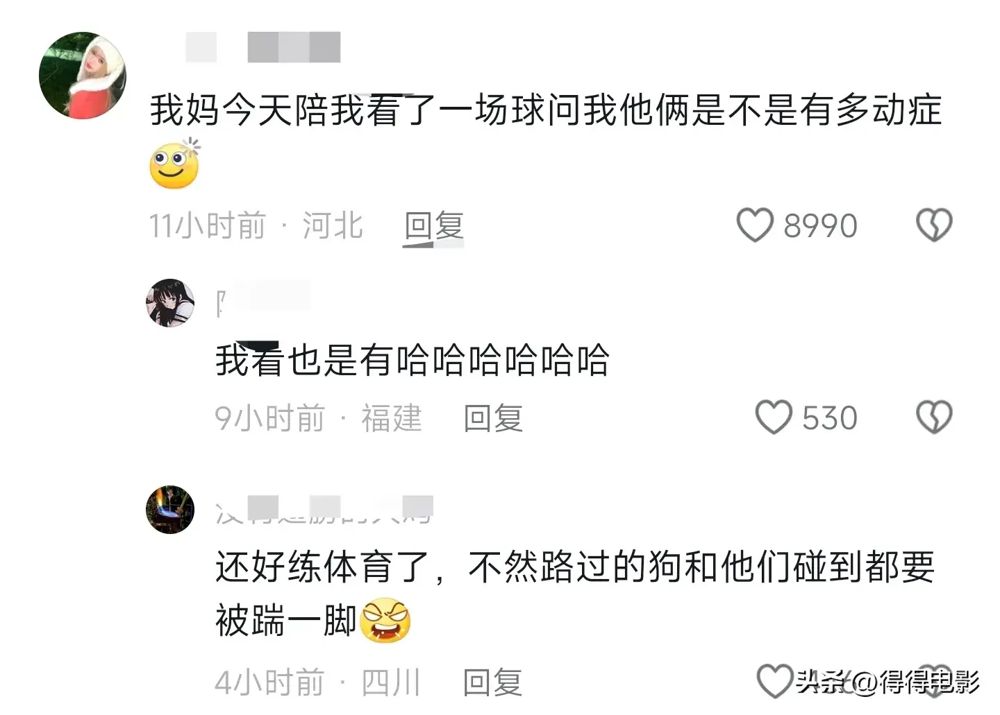
王昶与梁伟铿出圈全靠一个动作。
羽毛球中有一个骚操作叫“偷后场”，指在发球中用假动作反手发球把球发到对面的后方极限位置。
这个手法在新手区极为常见，算是野球场的一种骚操作，娱乐性拉满但并不犯规。
而王昶和梁伟铿竟然把这个操作带到了奥运会，并发扬光大。
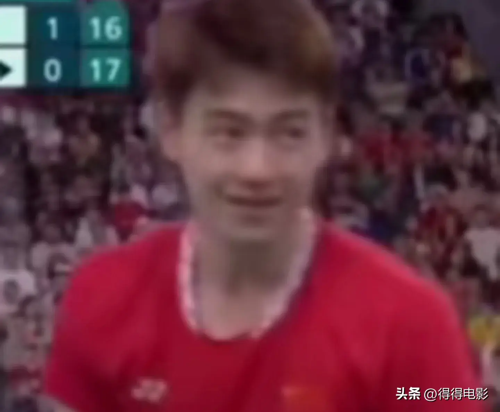
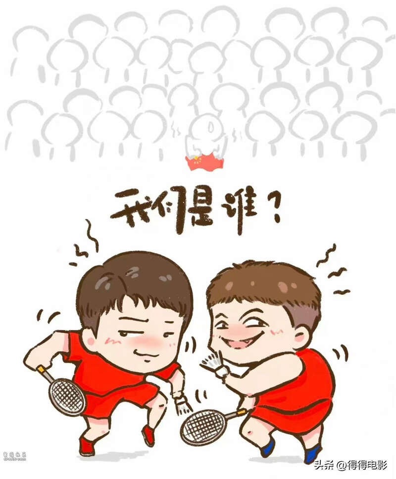
在与外国友人比赛的过程中，王昶多次发球偷后场。
外国人躬身扶拍做好准备，而王昶直立停顿，突然歪嘴一笑，身后的梁伟铿也心领神会，频频挑眉回应。
接着毫无征兆地，这小球嗖地一下就飞向了边角。
得分！
外国人顿时一脸懵圈，有的愣在原地，有的摔地四仰八叉。
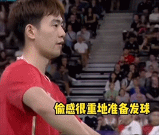
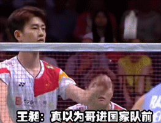
梁伟铿：
哥们我有一个馊主意！
王昶：
你这个不行，我有一个更馊的！
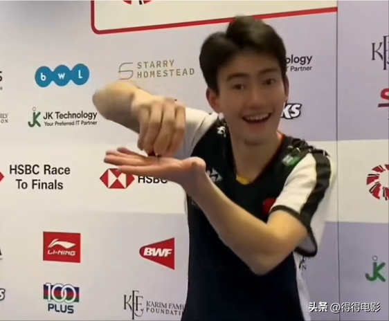
哈哈哈，事实证明，把初阶技能点满，照样能打败王者！
而得分后更有意思。
别人都是吼一声增加士气，他们俩的庆祝就跟设计好剧本一样——
一个“OI~”，一个“呕吼”。
有时又一个“耶”，一个“哇偶”。
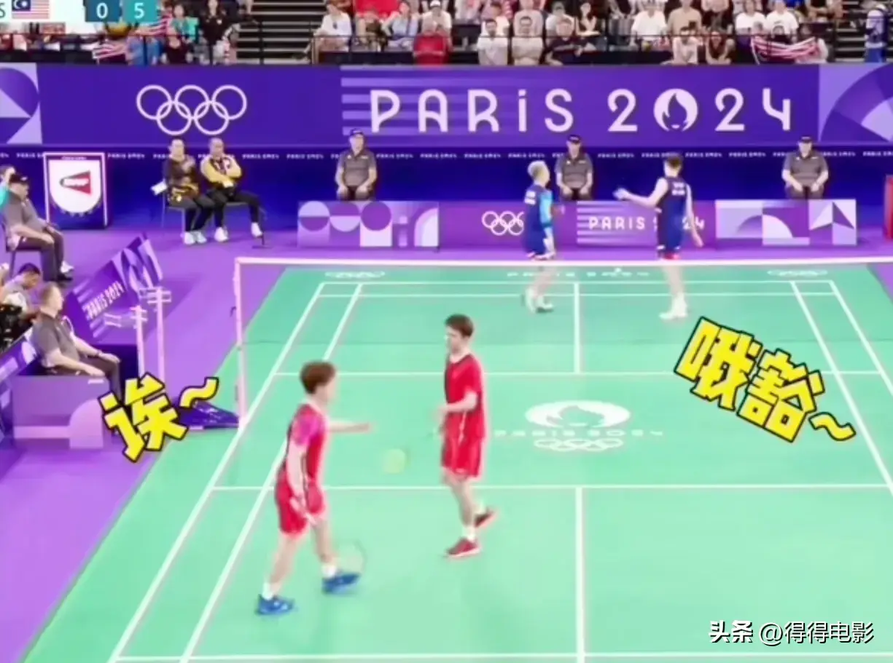
虽然只有一两个字，但那语调那叫一个十八弯，巴不得当场唱出个山歌，对外国友人进行又一轮精神攻击。
那咋了？
不也没犯规吗？
你不服你打赢我呗。
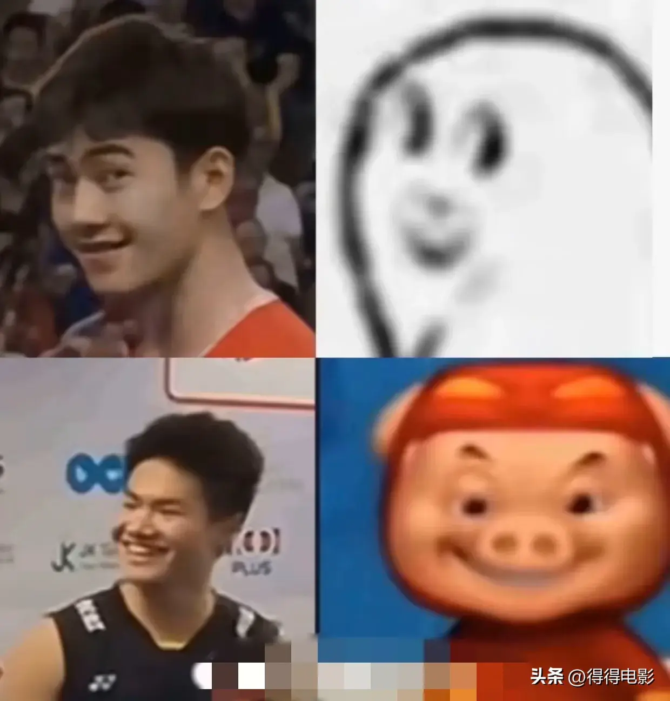
比赛间隙更有意思。
半决赛，王昶和梁伟铿遇上了马来西亚名将“苏谢”组合。
对战情况十分胶灼，双方互咬比分寸分不让，一直到了赛点关键时刻。
暂停时间中，马来西亚教练赶紧过来和运动员商量对策，现场气氛十分凝重。
接着镜头一转，王昶和梁伟铿在坐着喝饮料….
咋的？
不让休息吗？
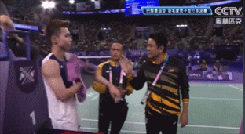
见马来西亚队还没商量完，王昶和梁伟铿百无聊赖，跑过去跟扫地大爷聊起了天。
还一五一十亲自“指导”扫地大爷的工作….
而半决赛最后，王昶一个扑球，正正好好躺在他刚刚指的地方。
不是，你是提前给自己扫出个床铺中途休息一下是吧？
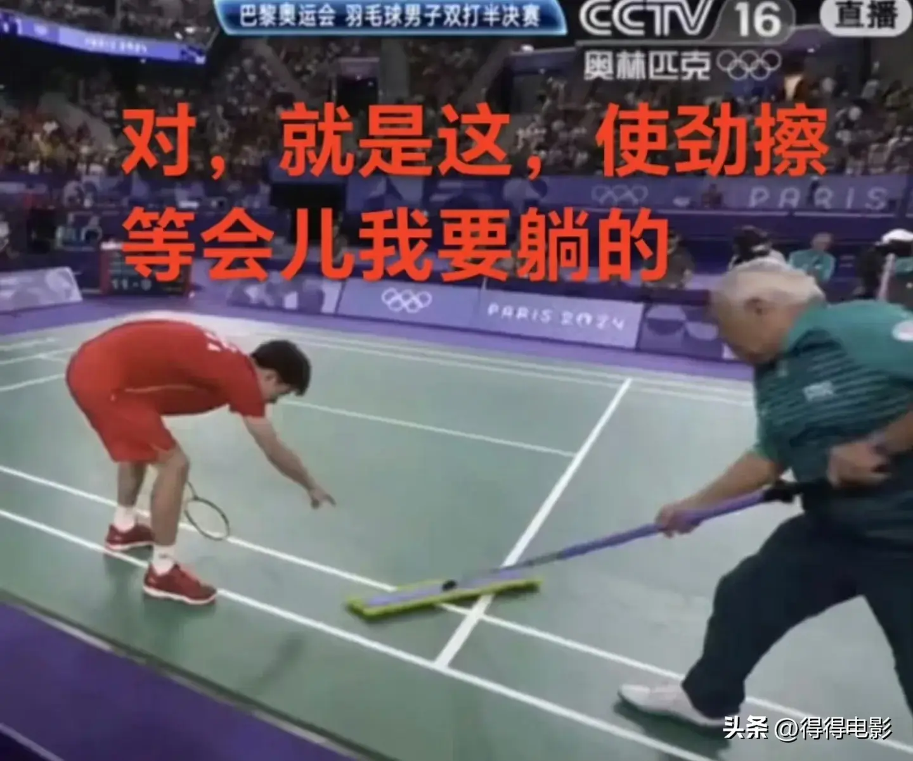
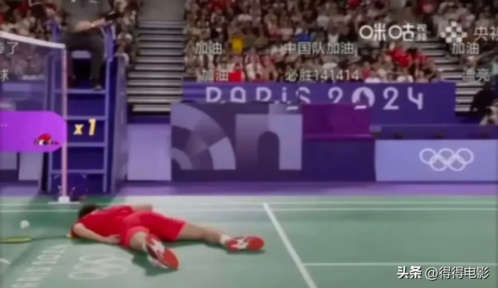
可问题是，人家越松弛，胜率就越高，半决赛愣是把马来西亚夺金热门“苏谢”组合给打了个2-0，你不服还不行。
比赛过程中都这么搞笑，打赢后更是放飞自我。
最后一个关键球，赢了之后两个人一秒切换形态。
上一刻还紧绷肌肉，下一秒立即上演“辣椒求雨”名场面。
网友辣评——
赢了不跪等于白赢！
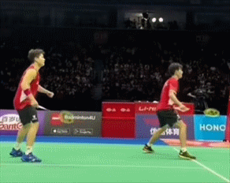
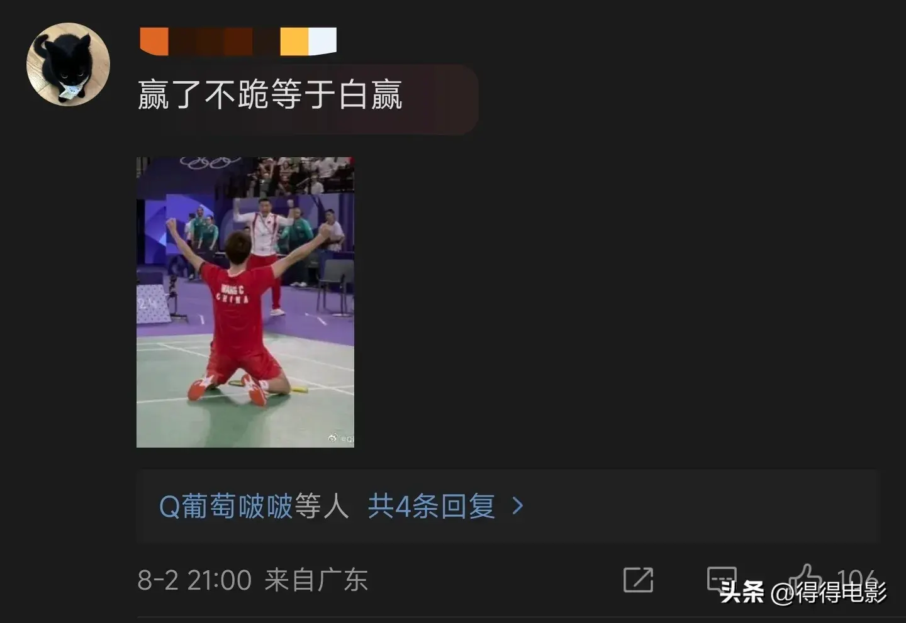
赛后采访面对央视镜头，王昶和梁伟铿没有半点拘束，主打一个想说啥就说啥。
梁伟铿是广东人，记者用广东话和他交流。
说完几句客套话后，记者问王昶感想，王昶又听不懂广东话，而后脱口而出——
“系啊~系啊~”
我虽然听不懂，但你敢问我就敢答应。
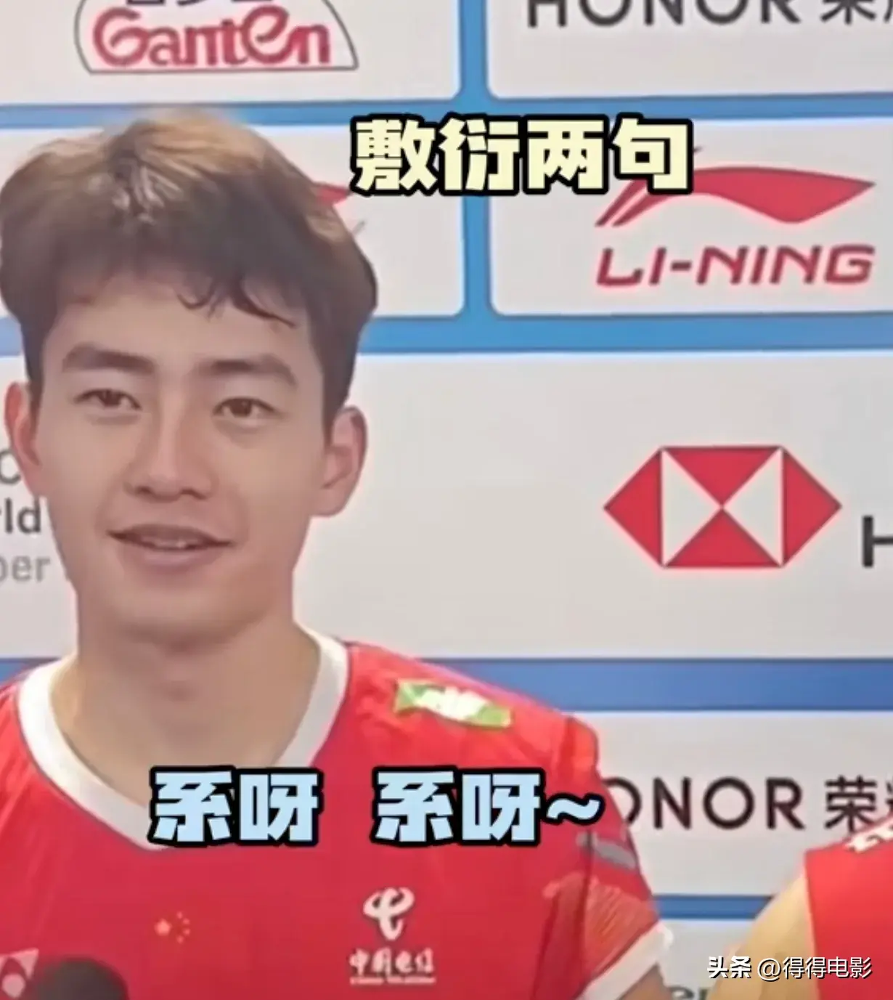
接着记者又跟梁伟铿对话，几句广东话聊完后，记者把话筒给了王昶。
他愣了一下，又吐出一句：
“唔好意思！我系差人！”
好家伙，闹半天搁这儿套《无间道》的台词呢。
主打一个已读乱回。
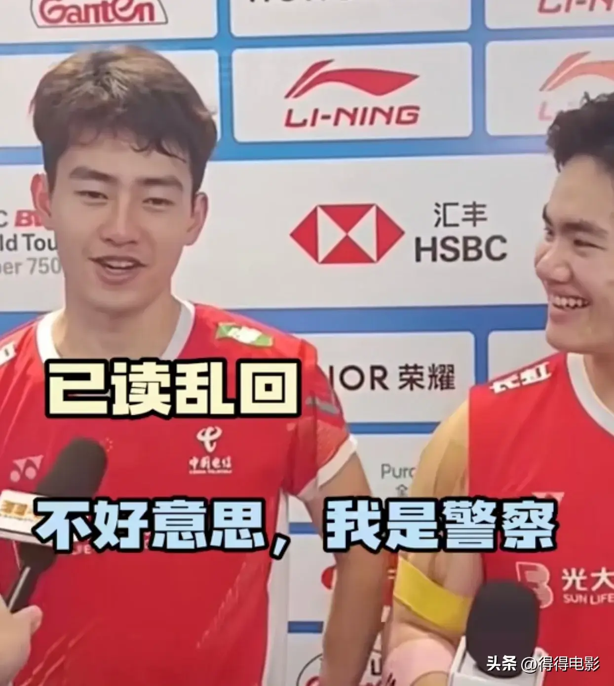
你以为这就完了吗？
这哥俩竟然在赛后采访中，面对官方镜头跳起了舞！
俩人跳《挖啊挖》，一个负责找场景，一个负责挖，那动作比赛场上还放飞自我。
啊啊啊啊！受不了了！
春晚没有你们我不看！
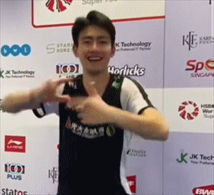
其实在奥运会刚开始的时候，这哥俩早就上演了名场面——
别人到了赛场都是激动万分，全力备战。
而梁伟铿坐在休息椅上突然倍感舒服，接着就和王昶针对“凳子是LV的还是红双喜”的问题陷入了激烈讨论。
哈哈哈哈。
有没有一点正型！
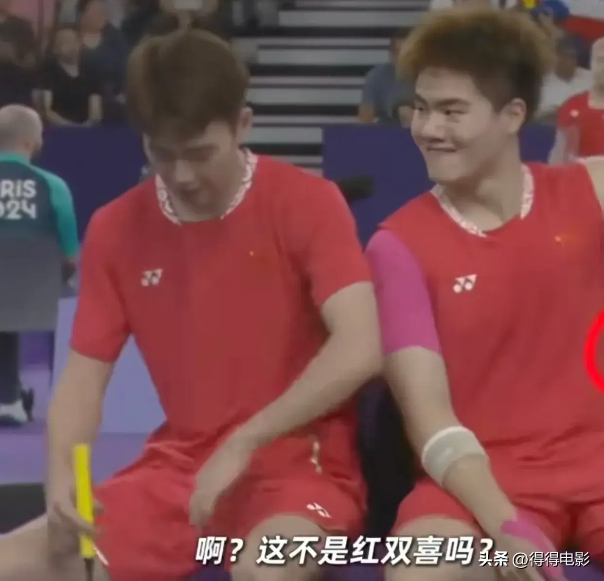
这时候有人要问了，这俩人这么耍宝，教练不管吗？
教练？
什么教练？
中场休息中，王昶和梁伟铿见教练起身过来，俩人一对视就憋了一肚子坏水。
接着教练跑过来发号施令，噼里啪啦说了一堆，王昶和梁伟铿一个字儿也没听进去，俩人各聊个的，一眼都没看教练。
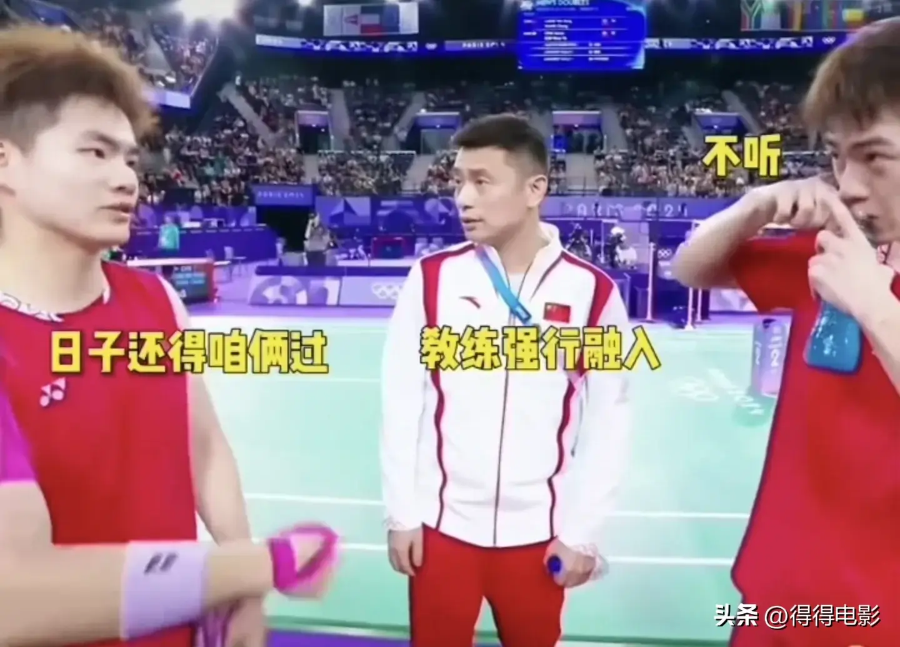
教练声音越来越小，突然感到身上有蚂蚁在爬。
接着一扭头，娇羞地走了。
但话说回来，我实名怀疑这俩人的抽象就是从教练身上学来的——
毕竟斜跨身份牌这种造型，谁能想出来啊？！
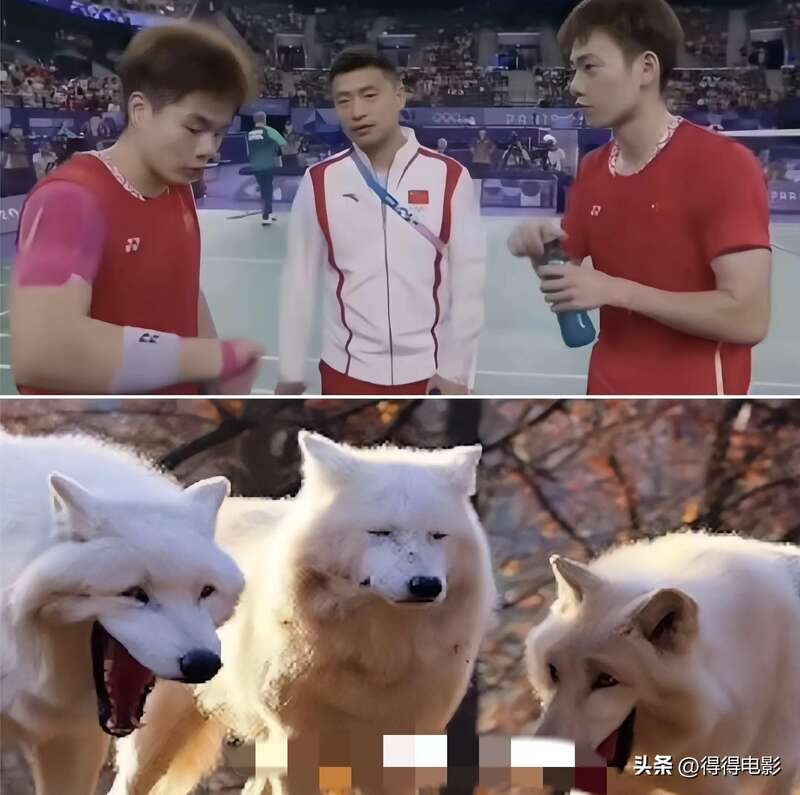
自己的队员在激烈比赛时，教练却双手抱胸，悠然地翘起了二郎腿。
嚯，闹半天抽象的源头在这里。
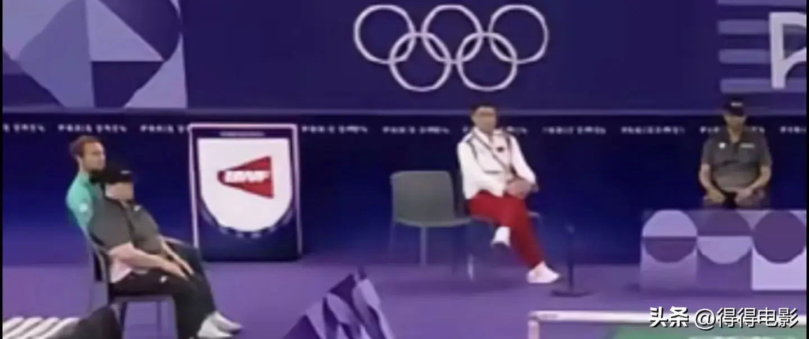
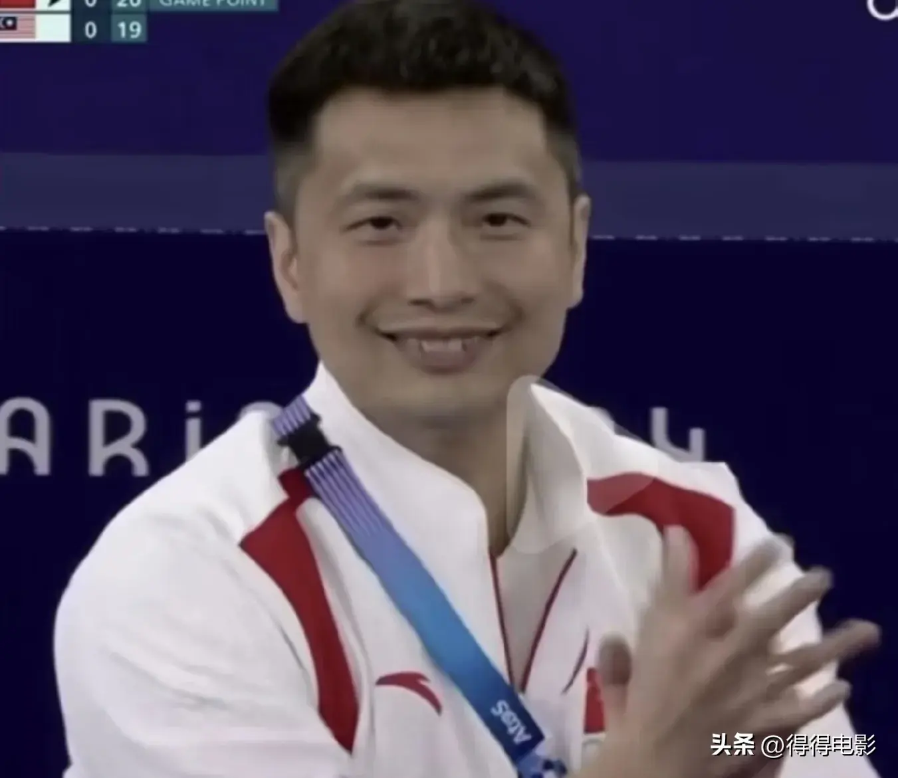
还有好事者找到教练，说他的名字不吉利。
教练的回应很暖心，甚至还要帮对方的大爷改个名字。
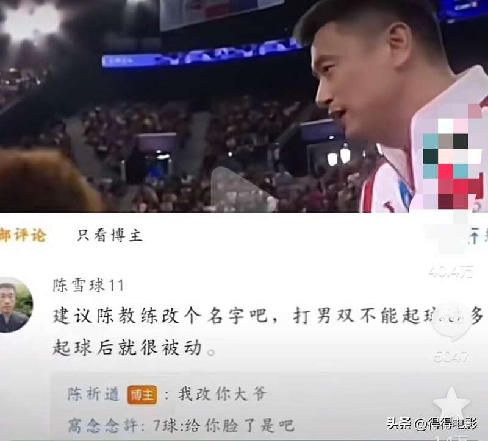
天才与天才当然了，咱别顾着笑，王昶与梁伟铿绝对不是靠抽象走到了全球最高竞技台的。
曾经，这俩人并不是一组。
王昶原本是羽毛球天才型选手，可与前搭档配合并不默契，成绩很差。
2022年队内重组，王昶遇到了梁伟铿。
两个人一个快枪手，一个重炮手，赛场上是天作之合，生活里的三观也是完美匹配。
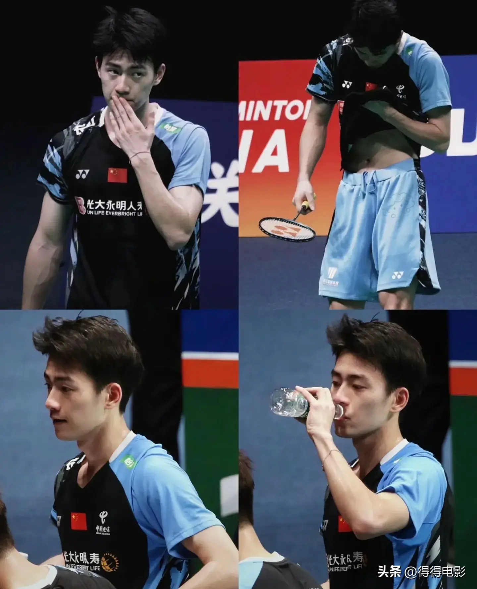
一开始，他们组合是世界排名444名。
教练知道后还嘲讽道：
“不是你们我都不知道世界上有这么多羽毛球男双组合。”
而仅仅2年时间，王昶与梁伟铿从吊车尾打到了世界男双第一。
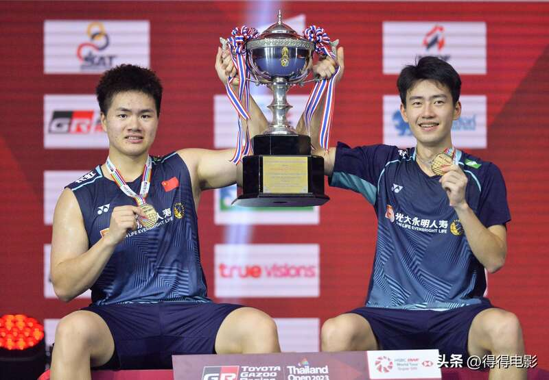
两人组合，除了比赛时的配合，还有情绪上的互相影响。
在赛场上，不管打赢了打输了，王、梁二人从来不会给对方脸色，只会给对方正向情绪影响。
赢了笑，输了也笑，偷后场成功了也笑，失败了也笑。
比赛中，王昶每一个球都拼尽全力补救，有时候扑出去摔个四仰八叉。
失败了，但脸上却始终洋溢着笑容。
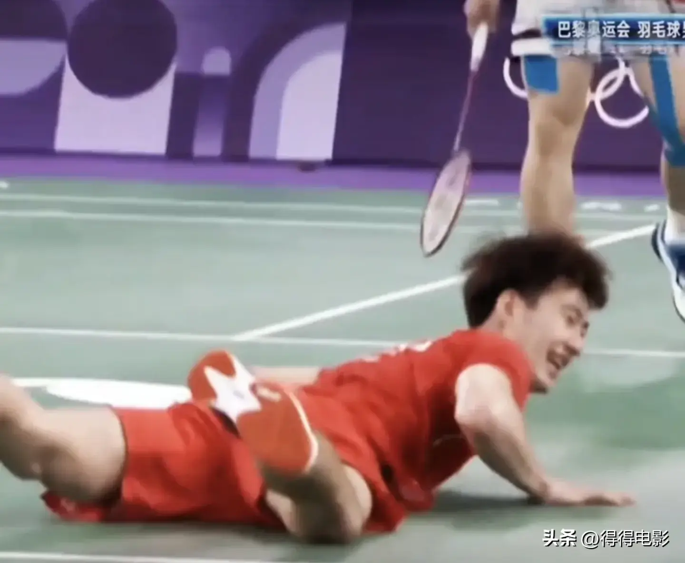
赢了第一个球，俩人就立马憋不住笑了。
关键赛点差一个球就分出胜负的时刻，观众都屏住呼吸，而镜头扫过他们时，竟还能云淡风轻和镜头互动。
王昶自己露脸不行，还得叫来兄弟梁伟铿。
来来来，都哥们！

也正是因为这种信任与乐观，梁伟铿即使比赛中图犯了丢拍这种巨大错误，旁边的王昶一记扣杀也能赢分。
对面的外国人还以为这是战术呢，光顾着看梁伟铿了。
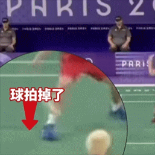
两年征战，他们成功过，当然也失败过，但他们从来没有抱怨过。
因为他们知道，只有两个人在一起时才是一个整体——
“没你，我怎么进决赛。”
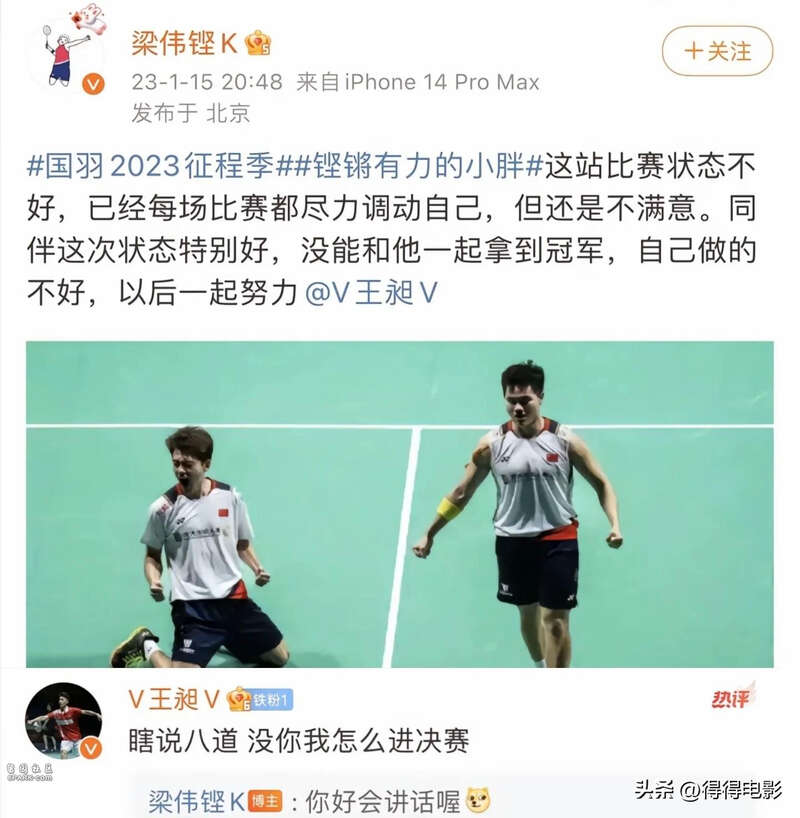
而我们喜欢他，自然是他们能够肩负起国家的责任，在赛场上有绝对的硬实力，这是重中之重。
拜托，人家可是羽毛球男双世界第一啊！
而专业之外，他们身上更珍贵的品质，是永远保持乐观，永远为身边人提供情绪价值，做情绪的主导者。
很多事如果能快乐做，那就没必要愁眉苦脸，何必每时每刻都惦记着上价值呢？
我玩着赢，也是赢。
这是中国的零零后给世界上的一课。
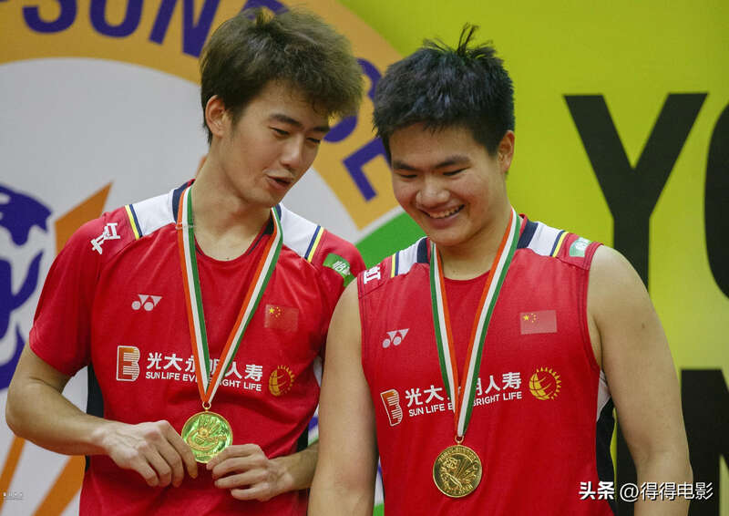
当然了，“梁王”走到总决赛，有些人是不高兴的。
谁呢？
当然是对手了。
一边偷后场，一边上演小品，把对手打得体无完肤还“哇偶~”嘲讽，见梁王一路过关斩将，老外们又破防了，网络上此时刮起了一阵热嘲。
但那咋啦？
犯规了吗？连初阶技能都防不住，还上什么奥运会？
继续吠吧，哥俩还忙着为国争光呢！
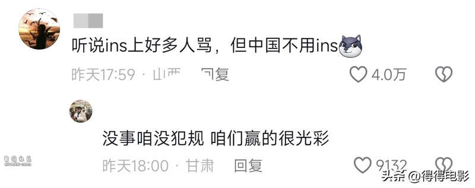
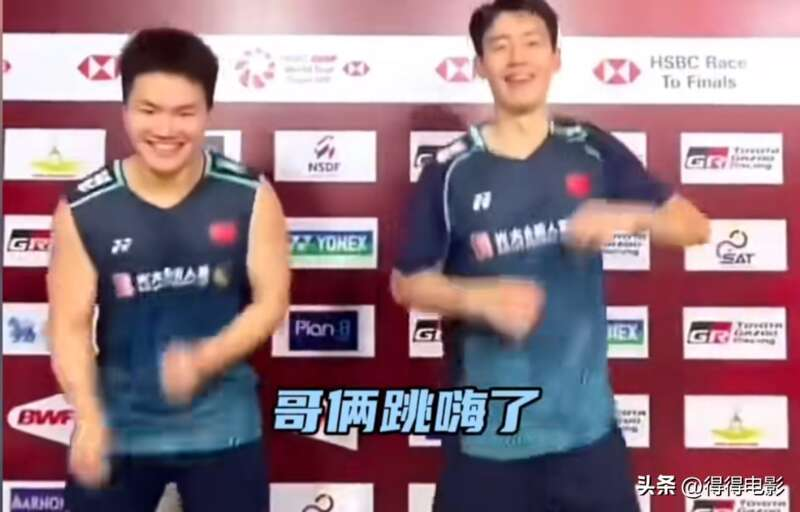
接下来，“梁王”组合的总决赛在8月4日，对战的同样是我国的台湾省队。
无论结果如何，冠亚军都提前锁定在中国了，“梁王”无论输赢都是最好的结局。
4号！
记得支持“梁王”！